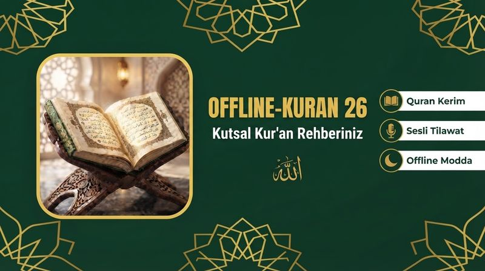
Offline-Kuran 26
Kur'an-ı Kerim'i internet olmadan okuyun ve dinleyin.
Detaylar →ErsenBox uygulamaları: Kur'an, namaz, zikir, dua ve günlük yaşam uygulamaları. APK indirin veya web sürümünü doğrudan açın.

Kur'an-ı Kerim'i internet olmadan okuyun ve dinleyin.
Detaylar →Günlük ibadet ve amel takibi.
Detaylar →Zikir ve tesbih sayacı.
Detaylar →Kur'an-ı Kerim okuma ve dinleme uygulaması.
Detaylar →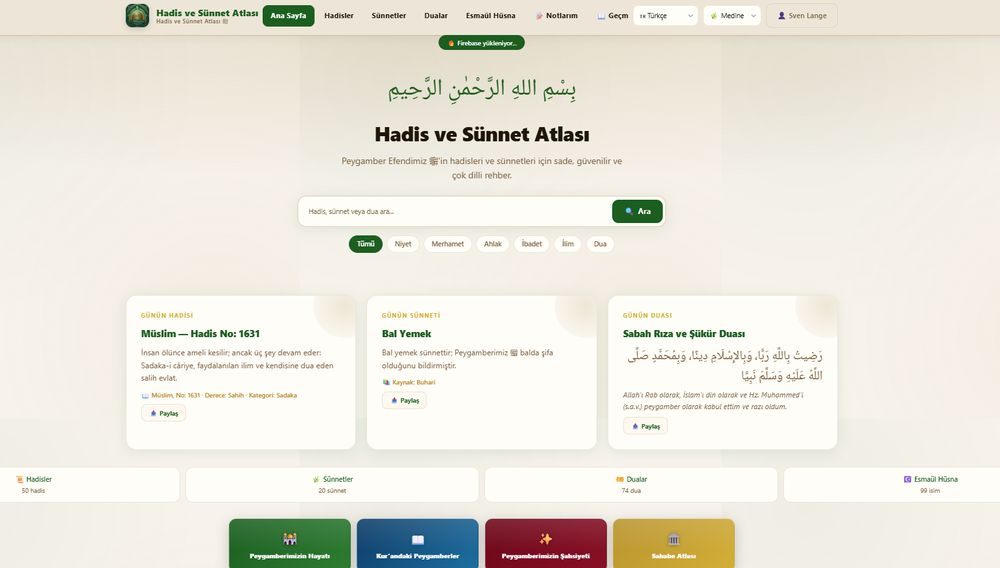
Hadis ve sünnet kaynaklarını keşfedin.
Detaylar →İslami takvim ve önemli günler.
Detaylar →Gelir ve gider takibi için kasa defteri.
Detaylar →Matematik bulmaca oyunu.
Detaylar →Akıllı günlük ve görev planlayıcı.
Detaylar →Kur'an okuma yolculuğunuz için uygulama.
Detaylar →Türkçe öğrenme uygulaması.
Detaylar →Parolalarınızı güvenle saklayın.
Detaylar →Sesle yazma, sesli okuma ve çeviri.
Detaylar →Hızlı ve sade not defteri.
Detaylar →Akıllı not uygulaması.
Detaylar →Notlarınızı hızlıca yazın ve düzenleyin.
Detaylar →Tarama uygulaması.
Detaylar →Otomatik bağlantı uygulaması.
Detaylar →Matematik çalışma uygulaması.
Detaylar →Çarpım tablosu çalışma uygulaması.
Detaylar →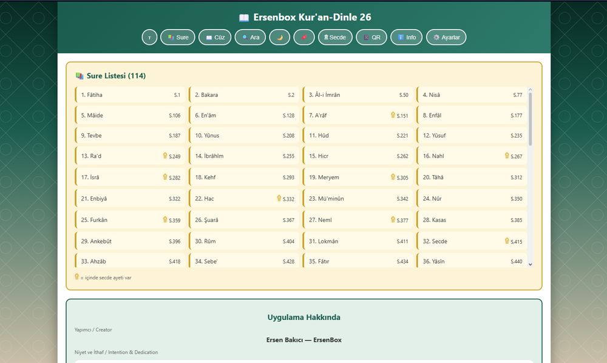
Kur'an-ı Kerim dinleme uygulaması.
Detaylar →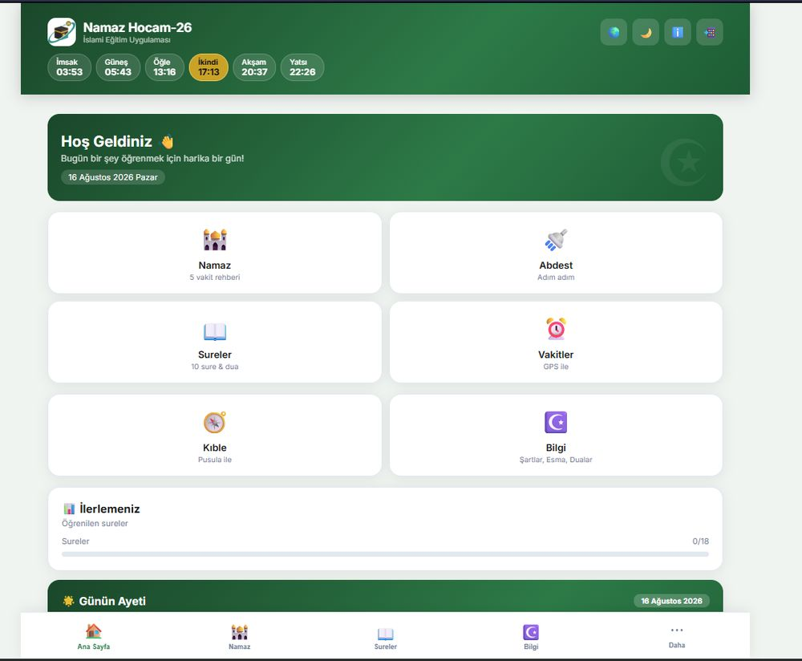
Namaz öğrenme rehberi.
Detaylar →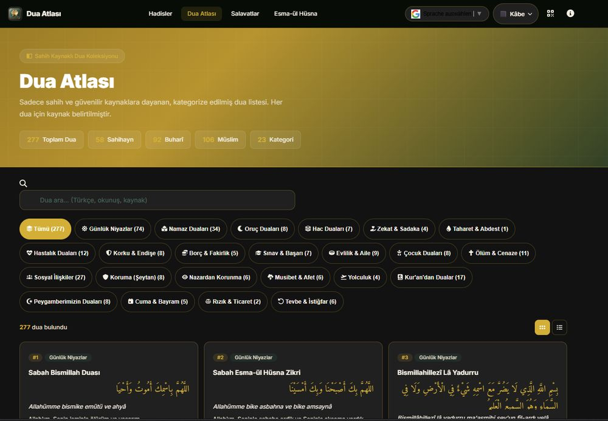
Dualar ve kaynakları.
Detaylar →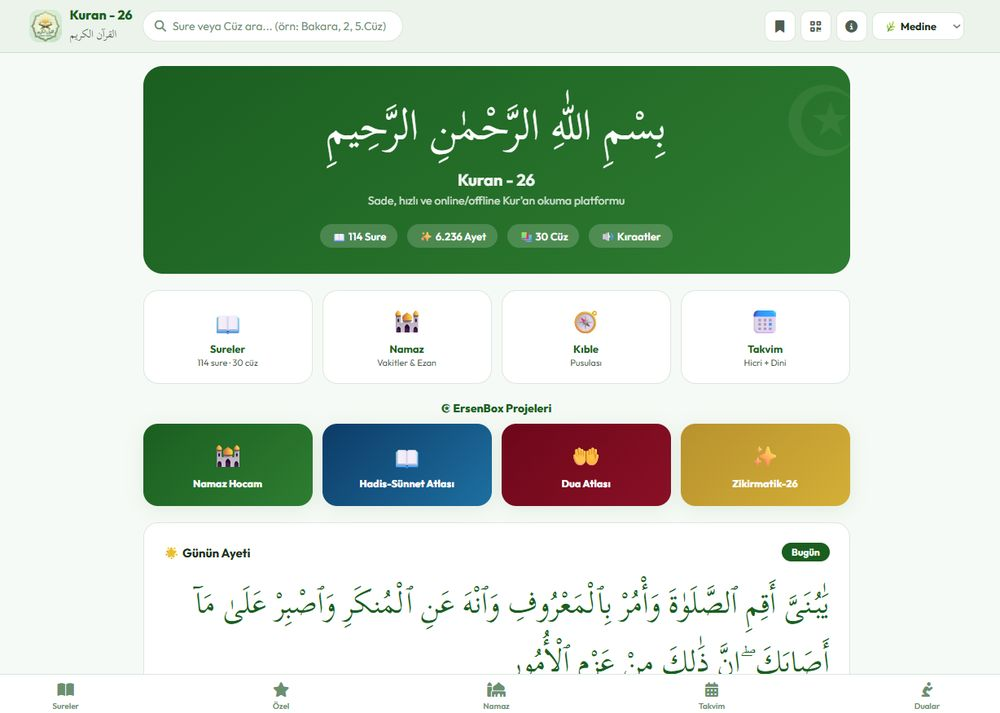
Kur'an-ı Kerim web uygulaması.
Detaylar →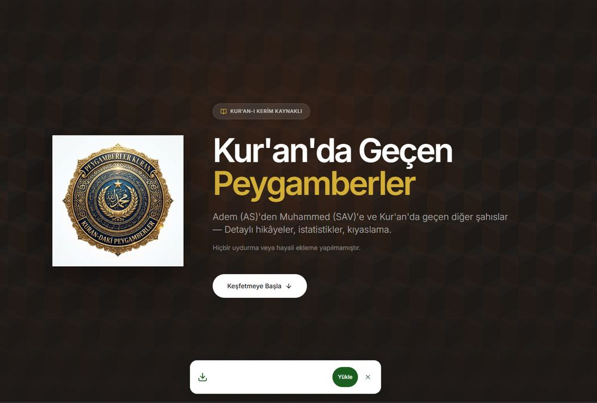
Kur'an'da adı geçen peygamberler.
Detaylar →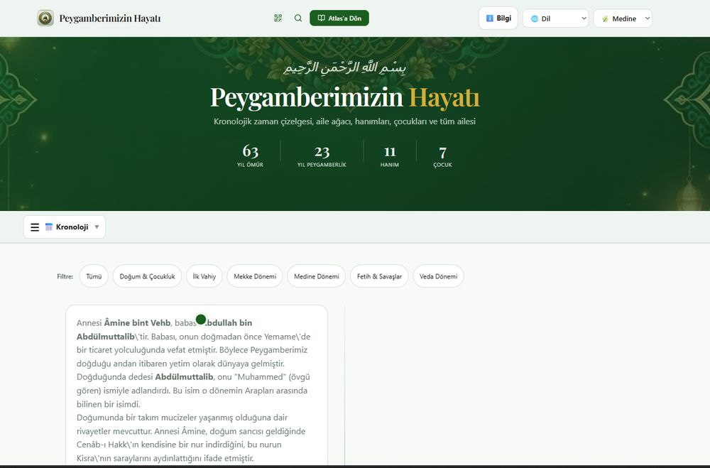
Hz. Muhammed'in (s.a.v.) hayatı.
Detaylar →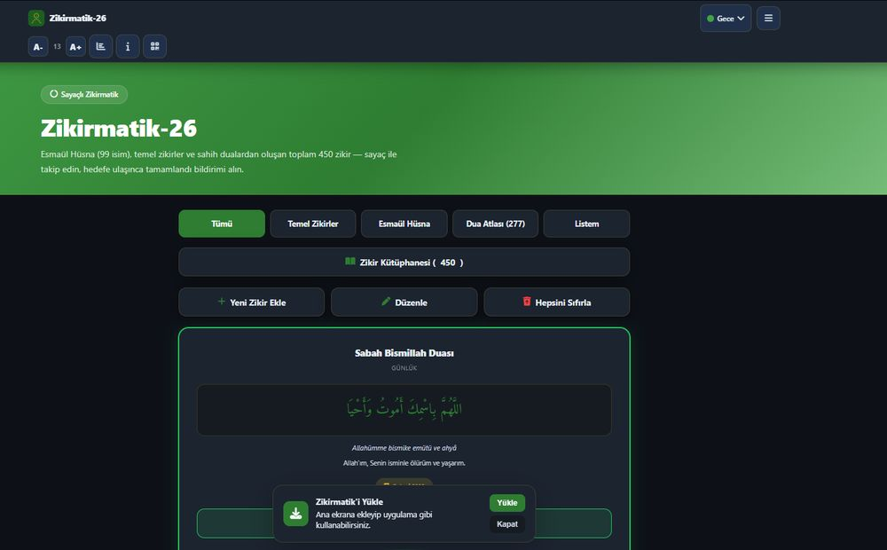
Web tabanlı zikirmatik.
Detaylar →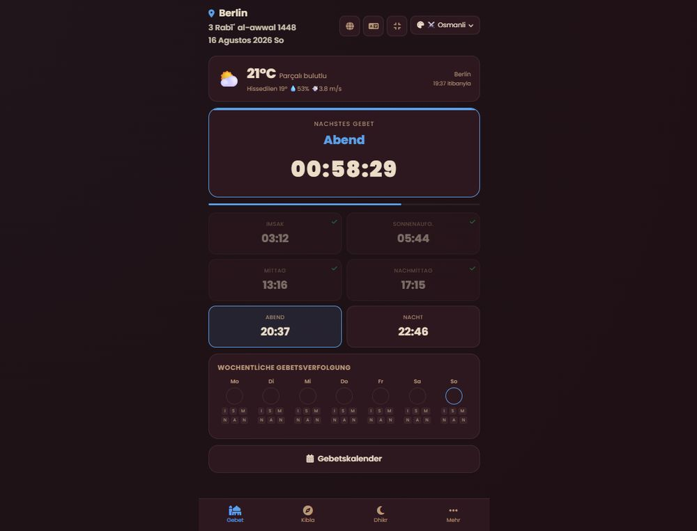
Namaz vakitleri.
Detaylar →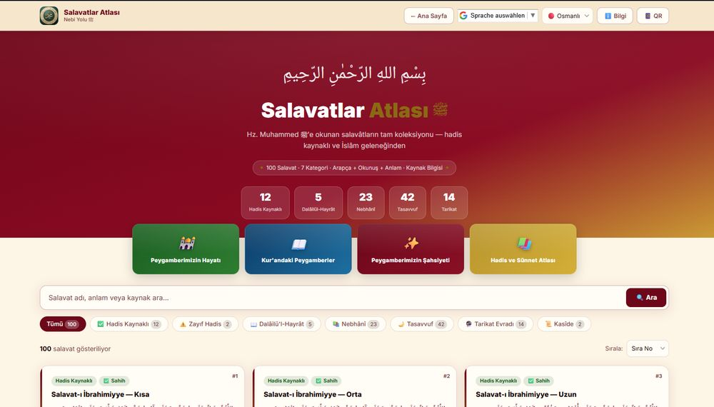
Salavat-ı Şerifler.
Detaylar →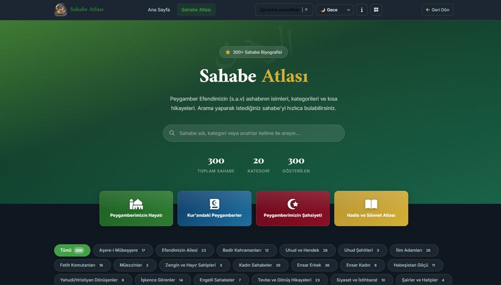
Sahabe-i Kiram hakkında bilgiler.
Detaylar →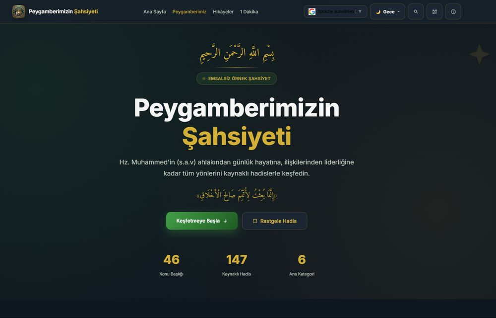
Hz. Muhammed'in (s.a.v.) şahsiyeti ve ahlakı.
Detaylar →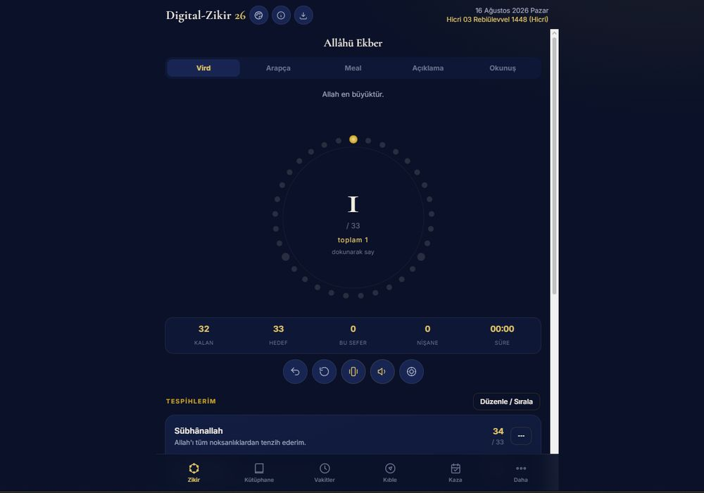
Dijital zikir sayacı.
Detaylar →